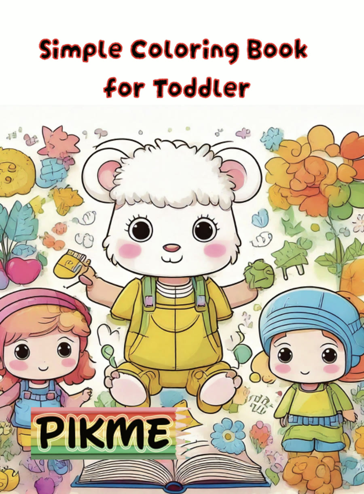
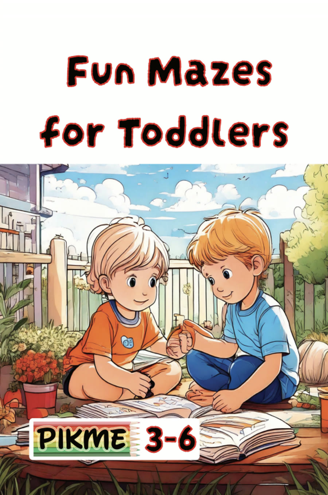
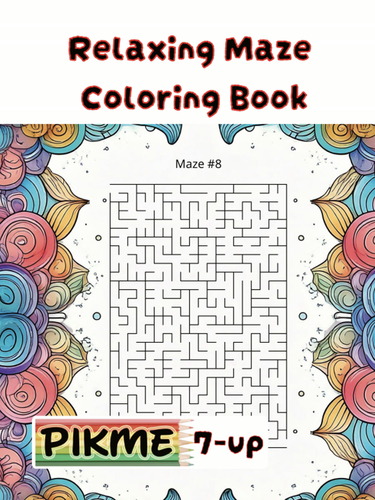
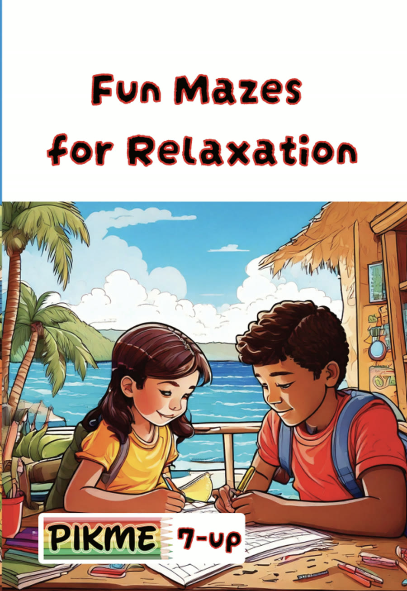

Quiet, low-prep ideas for the back seat, and a few planning habits that keep the drive calmer.
A long car journey asks a lot of a child. The seat is fixed, the view keeps changing, and there is little room to move. For children who are sensitive to noise, motion, or waiting, a few quiet plans made ahead of time can make the hours feel gentler for everyone in the car.
This guide gathers calm, low-prep ideas for the back seat, along with some simple planning habits drawn from pediatric sources.
Nationwide Children's Hospital suggests practicing short car rides of about 5 to 10 minutes when no one is in a hurry, then slowly making them longer. It also suggests keeping to your child's usual routine when you schedule a trip, and packing the car the day before so the morning feels less rushed.
Telling your child where you are going and roughly how long it will take can help too. Some families draw a simple picture map of the day, with the car, a rest stop, and the destination, so a child can see what comes next.
The American Academy of Pediatrics notes that some boredom on a long drive is normal, and that it gives children room to daydream and watch the scenery. It also encourages keeping road trips screen-free. Nationwide Children's adds that a few non-electronic activities are a useful backup, since a tablet cannot help when the battery runs out or the signal drops. Their examples include coloring books, word searches, and books.
Here are some quiet ideas to keep within reach.
Many families find it easier to pack one small bag for the back seat than to search the trunk during the drive. A soft pouch with a few crayons, three or four printed pages, a small maze book, and a favorite quiet toy is often enough.
Our free Quiet Time Starter Pack gives you three printable pages you can slip into the bag.
A calming corner guide and three printable coloring pages, sent to your inbox.
The AAP suggests stopping about every two hours to give both the driver and the child a break. A short stop to stretch, take a few slow breaths, and look at something far away can help a child reset before the next stretch of road.
It can also help to bring out new items one at a time rather than all at once. A page that appears at the right moment often holds attention longer than a full bag spread across the seat.
Nationwide Children's reminds families that children should stay buckled in a seat belt or car seat, and that if a child unbuckles, the driver should pull over as soon as it is safe. The AAP also advises that children under 13 ride in the back seat, and it suggests soft, lightweight toys for the car.
As a general suggestion, many families choose crayons over hard pencils and a soft lap tray or a firm book as a drawing surface, and they avoid heavy or sharp items within a child's reach. For young children, skip small pieces that could be a choking hazard, and keep snacks to ones you are comfortable with in a moving car.
If car journeys regularly leave your child very distressed, unwell, or unable to settle, or if you have questions about how your child handles travel, your pediatrician can help. They can also talk with you about car seat choices that fit your child's age and size.
Every title below is a real, live coloring book in our catalog, picked for this theme and not written for it.

Big, simple shapes made for little hands just learning to hold a crayon.
View Coloring Book
Wide, forgiving maze paths made for a toddler's first steps into focused play.
View Coloring Book
Slow-winding maze paths designed to settle a busy mind, one turn at a time.
View Coloring Book
Gentle maze paths that give focused hands a slow, steady rhythm to follow.
View Coloring Book
Road Trip Play Ideas for Backseat Fun, American Academy of Pediatrics, HealthyChildren.org.
Tips for Safe & Stress-Free Family Travel, American Academy of Pediatrics, HealthyChildren.org.
7 Tips for Traveling in the Car, Nationwide Children's Hospital.
More from us: calmkidssensory.com/links